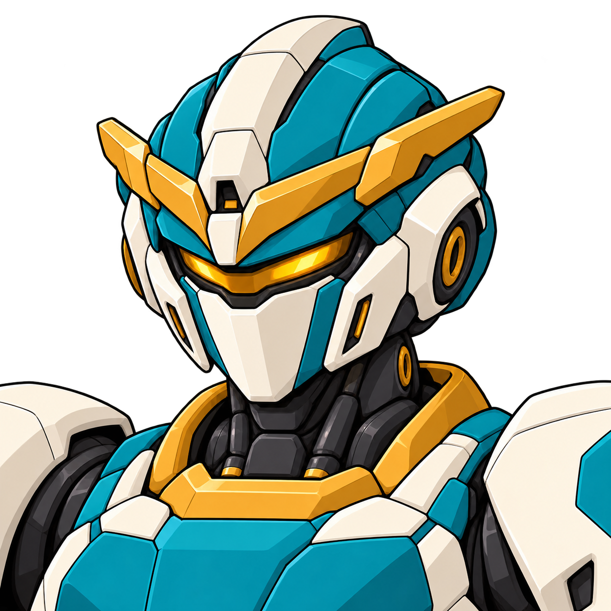
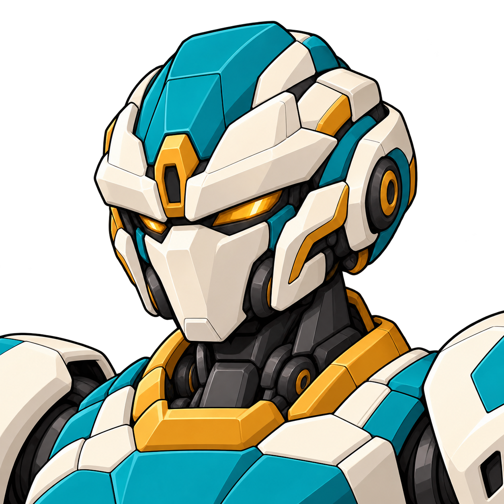
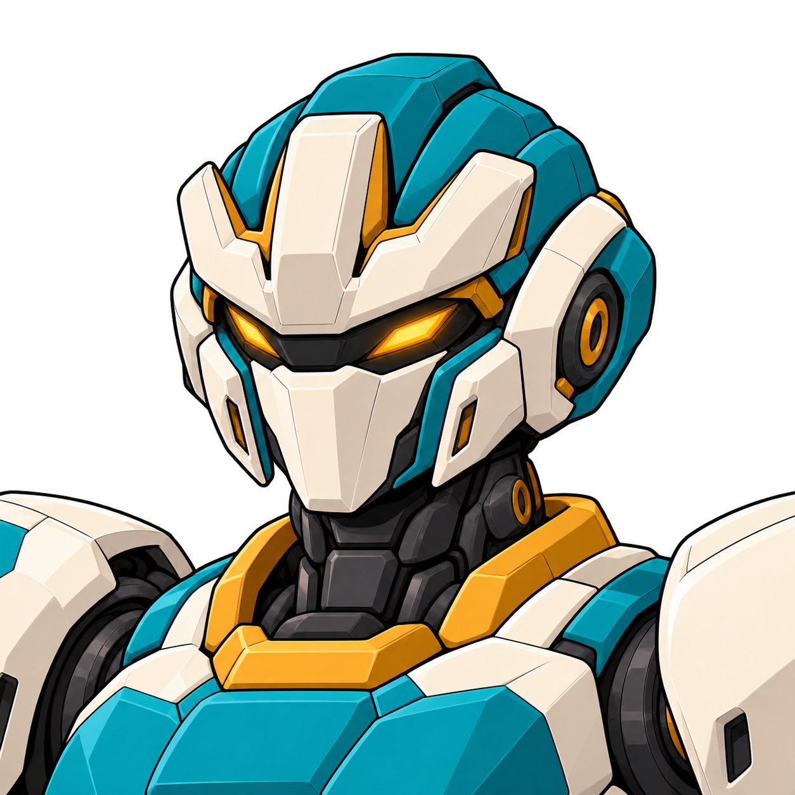
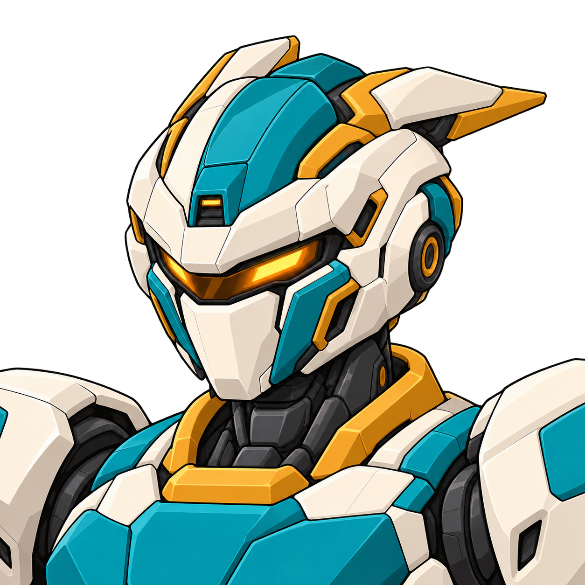

A 中央独冠
中轴冠脊向后延伸，侧面贴合，保留整条琥珀传感窗。
最简洁、运动感强；与v3的亲缘最近。
2026.10.18 · 原六种参考 · 用户已选择A+E组合方向
当前用户选择：A中央冠脊 + E短折角侧翼，改为对称脸部并拉开与馆守Z的区别。查看新整合稿与馆守对照 →
上一版长耳头冠已否定，停作派生来源。本轮从中央冠、横向眉冠、紧凑面甲、三齿短冠、非对称和后掠冠六条方向比较。
馆守Z沿用现有资产，取消重做及另行风格转绘。社勇王与六名人物的固定设计保持。
统一白／青绿／赭金和相近三分之四角度。每张可点开原图；头冠、光学眼和面甲的差异是本轮设计内容，尚未指定一款替换游戏。
本轮以用户选择A+E继续；下方六张保留作来源与探索对照。A/E是选取的组合来源，不表示原两张或新整合稿已被当作完整机体定稿。
中轴冠脊向后延伸，侧面贴合，保留整条琥珀传感窗。
最简洁、运动感强；与v3的亲缘最近。

宽而低的金色V眉冠横向展开，冠端低于盔顶，侧面没有两根竖长耳。
英雄感明确，仍带经典角冠气质，需由用户判断。

厚白眉桥、分开的琥珀双眼与紧凑颊甲；无突出角片。
视线与面甲最有近战/拳手气质，可优先比较。

中央高、两侧低的三齿白冠整合在额前，眼部为双光学形。
头部焦点明确，比C更偏英雄机，可优先比较。

画面可见一侧是短折角镂空翼，另一侧保持贴合；连续传感窗。
非对称更有改件感，单侧外伸件仍需判断喜好。

双片冠翼向后横向扫出，白色眉桥与收尖面甲形成前后轮廓。
速度感强；仍有侧向冠翼，因此不作为默认推荐。
六款均使用内置Imagegen分别生成，原始输出已复制入项目，未改像素。六款完整实际提示词 · 图稿、来源、校验与作者观察。
输入的v3只提供配色、身体关系与共同画法；R4长耳稿保留失败历史，不作为新头部形状来源。
六张是局部设计参考，不是同模型三视或运行头像。选定后再做前/侧/背和整机对齐，保持原体术/合作维修身份。
回升级总页 · 社勇王与人物固定图集 · 最新用户决定